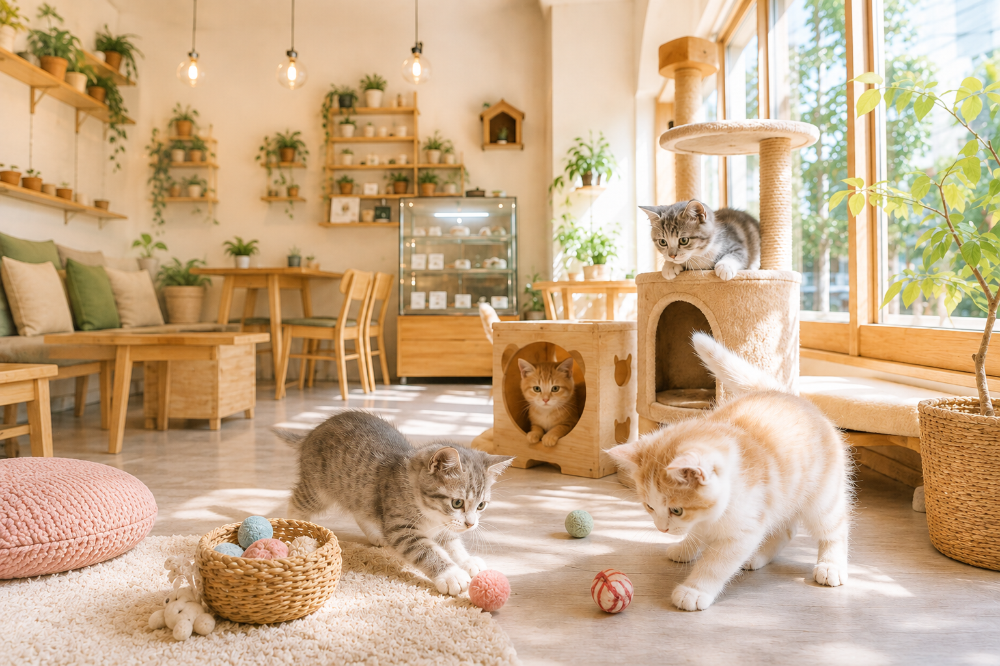

もな 3歳
甘えん坊
お客様の膝の上が大好き。気づくといつも誰かのそばにいます。

MOFUU CAT LOUNGE — YOKOHAMA
都会の中で、心がほどける猫とのひととき。
大きな窓から差し込む光と、8匹の猫たちが待っています。

ABOUT MOFUU
Mofuuは、横浜・山下町にひっそりと佇む猫カフェです。
大きな窓、木の温もり、観葉植物の緑——。
そのすべてが、忙しい毎日の中でこわばった心を、
少しずつゆるめてくれます。
保護猫カフェではなく、上質な時間そのものを楽しんでいただくための空間として設計しました。 北欧インテリアに囲まれた落ち着いた店内で、8匹の個性豊かな猫たちが、 あなたのそばでゆったりと過ごします。おひとりの時間にも、 大切な人との時間にも。ここでしか流れない、やさしい時間をどうぞ。
OUR CATS
それぞれに違う性格と表情。あなたのお気に入りを見つけてください。
甘えん坊
お客様の膝の上が大好き。気づくといつも誰かのそばにいます。

おっとりマイペース
窓辺の日だまりがお気に入り。マイペースに毛づくろいする姿が人気。

好奇心旺盛
新しいお客様が来ると真っ先にお出迎え。おもちゃ遊びが得意です。

やんちゃな甘えっ子
まだまだ子猫気分。追いかけっこと甘噛みが大好きな末っ子です。

しっかり者のお姉さん
他の猫たちのまとめ役。落ち着いた佇まいでいつも堂々としています。

人懐っこい
初めてのお客様にも臆せずご挨拶。撫でられるのが何よりの幸せ。

のんびり屋
高い場所からお店を見渡すのが日課。マイペースな時間の過ごし方の達人です。

元気いっぱい
店内で一番の運動好き。キャットタワーを飛び回る姿は必見です。
MENU
猫たちと過ごす時間を、もう少し豊かにするメニューをご用意しました。


GALLERY
クリックすると、写真を大きくご覧いただけます。
INFORMATION
ACCESS
みなとみらい線「元町・中華街」駅より徒歩8分。山下公園にもほど近い立地です。
猫カフェ Mofuu（もふぅ）
〒231-0023
神奈川県横浜市中区山下町○○-○